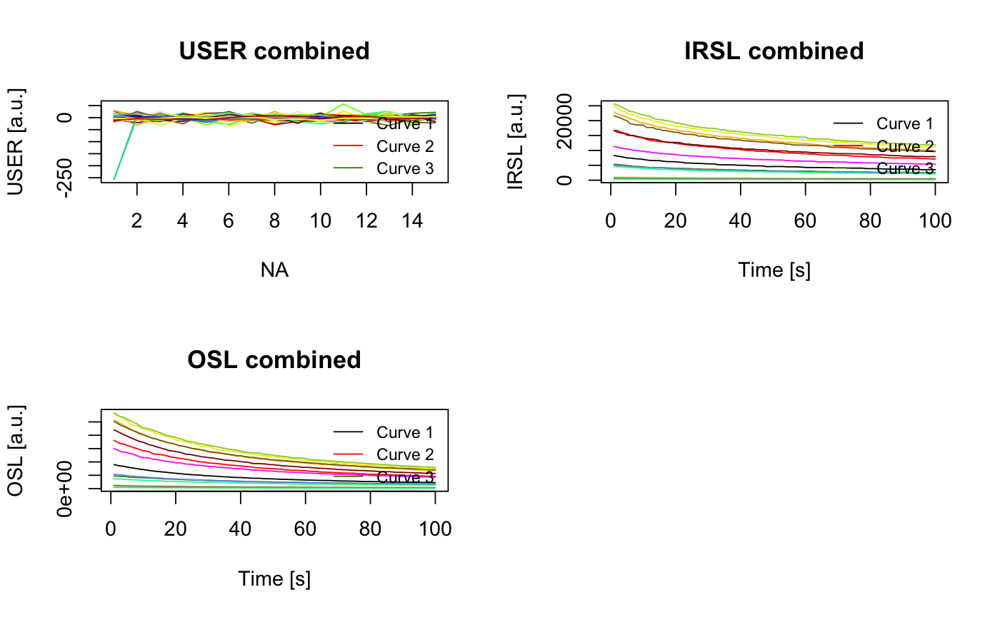

Analyse portable CW-OSL measurements
The function analyses CW-OSL curve data produced by a SUERC portable OSL reader and produces a combined plot of OSL/IRSL signal intensities, OSL/IRSL depletion ratios and the IRSL/OSL ratio.
analyse_portableOSL(object, signal.integral, invert = FALSE, normalise = FALSE, plot = TRUE, ...)
Arguments
| object | RLum.Analysis (required):
|
|---|---|
| signal.integral | vector (required):
A vector of two values specifying the lower and upper channel used to
calculate the OSL/IRSL signal. Can be provided in form of |
| invert | logical (with default):
|
| normalise | logical (with default):
|
| plot | logical (with default): enable/disable plot output |
| ... | currently not used. |
Value
Returns an S4 RLum.Results object.
Details
This function only works with RLum.Analysis objects produced by read_PSL2R.
It further assumes (or rather requires) an equal amount of OSL and IRSL curves that
are pairwise combined for calculating the IRSL/OSL ratio. For calculating the depletion ratios
the cumulative signal of the last n channels (same number of channels as specified
by signal.integral) is divided by cumulative signal of the first n channels (signal.integral).
Function version
0.0.3 (2018-01-21 17:22:38)
See also
RLum.Analysis, RLum.Data.Curve
How to cite
Burow, C. (2018). analyse_portableOSL(): Analyse portable CW-OSL measurements. Function version 0.0.3. In: Kreutzer, S., Burow, C., Dietze, M., Fuchs, M.C., Schmidt, C., Fischer, M., Friedrich, J. (2018). Luminescence: Comprehensive Luminescence Dating Data Analysis. R package version 0.8.0. https://CRAN.R-project.org/package=Luminescence
Examples
# (1) load example data set data("ExampleData.portableOSL", envir = environment()) # (2) merge and plot all RLum.Analysis objects merged <- merge_RLum(ExampleData.portableOSL) plot_RLum(merged, combine = TRUE)merged#> #> [RLum.Analysis-class] #> originator: merge_RLum.Analysis() #> protocol: portable OSL #> additional info elements: 196 #> number of records: 70 #> .. : RLum.Data.Curve : 70 #> .. .. : #1 USER | #2 IRSL | #3 USER | #4 OSL | #5 USER | #6 USER | #7 IRSL #> .. .. : #8 USER | #9 OSL | #10 USER | #11 USER | #12 IRSL | #13 USER | #14 OSL #> .. .. : #15 USER | #16 USER | #17 IRSL | #18 USER | #19 OSL | #20 USER | #21 USER #> .. .. : #22 IRSL | #23 USER | #24 OSL | #25 USER | #26 USER | #27 IRSL | #28 USER #> .. .. : #29 OSL | #30 USER | #31 USER | #32 IRSL | #33 USER | #34 OSL | #35 USER #> .. .. : #36 USER | #37 IRSL | #38 USER | #39 OSL | #40 USER | #41 USER | #42 IRSL #> .. .. : #43 USER | #44 OSL | #45 USER | #46 USER | #47 IRSL | #48 USER | #49 OSL #> .. .. : #50 USER | #51 USER | #52 IRSL | #53 USER | #54 OSL | #55 USER | #56 USER #> .. .. : #57 IRSL | #58 USER | #59 OSL | #60 USER | #61 USER | #62 IRSL | #63 USER #> .. .. : #64 OSL | #65 USER | #66 USER | #67 IRSL | #68 USER | #69 OSL | #70 USER# (3) analyse and plot results <- analyse_portableOSL(merged, signal.integral = 1:5, invert = FALSE, normalise = TRUE)get_RLum(results)#> BSL BSL_error IRSL IRSL_error BSL_depletion IRSL_depletion #> 1 0.66751034 0.0016178539 0.69677206 0.0035040643 0.8675537 0.9158216 #> 2 1.33608934 0.0022884430 1.43034913 0.0050268167 0.8811300 0.9087895 #> 3 0.35999022 0.0011869945 0.45413426 0.0028330832 1.1992200 1.0233685 #> 4 0.39980864 0.0012483733 0.42331051 0.0027004844 1.0490701 1.0190504 #> 5 1.91016028 0.0027332907 1.93584455 0.0058476153 0.9097980 0.9352608 #> 6 1.87047105 0.0027051257 1.83712738 0.0056976151 0.9659504 0.9506562 #> 7 1.10402143 0.0020801568 0.95869456 0.0041114642 0.9922993 1.0143051 #> 8 0.27824348 0.0010434799 0.39608610 0.0026434540 1.1796670 0.9835481 #> 9 2.09649886 0.0028644330 2.08440551 0.0060688839 0.9090499 0.9673997 #> 10 2.12595947 0.0028889095 2.17793540 0.0062025491 0.9572100 0.9799674 #> 11 1.63105170 0.0025284109 1.40432450 0.0049269556 0.8899796 1.0160485 #> 12 0.10425127 0.0006390972 0.10266938 0.0013732741 1.1011572 1.0718821 #> 13 0.08261577 0.0005690871 0.06579380 0.0010890682 1.0486319 1.1398779 #> 14 0.03332815 0.0003606878 0.03255285 0.0007974928 1.0492829 1.0740241 #> IRSL_BSL_RATIO #> 1 1.0438371 #> 2 1.0705490 #> 3 1.2615183 #> 4 1.0587828 #> 5 1.0134461 #> 6 0.9821737 #> 7 0.8683659 #> 8 1.4235234 #> 9 0.9942316 #> 10 1.0244482 #> 11 0.8609933 #> 12 0.9848262 #> 13 0.7963831 #> 14 0.9767372